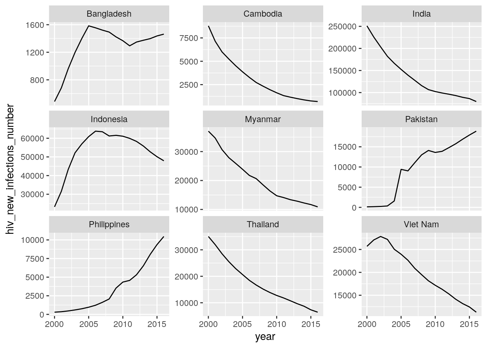
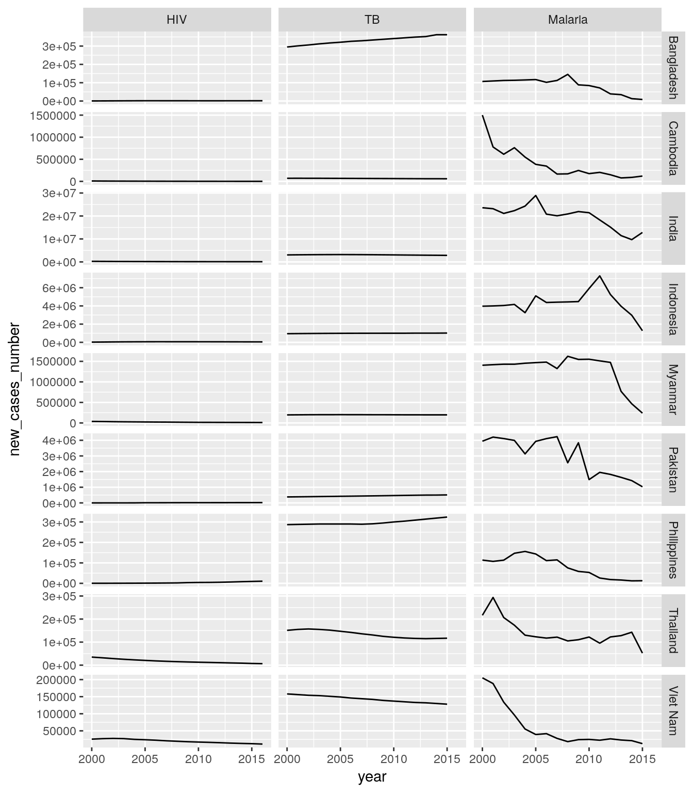
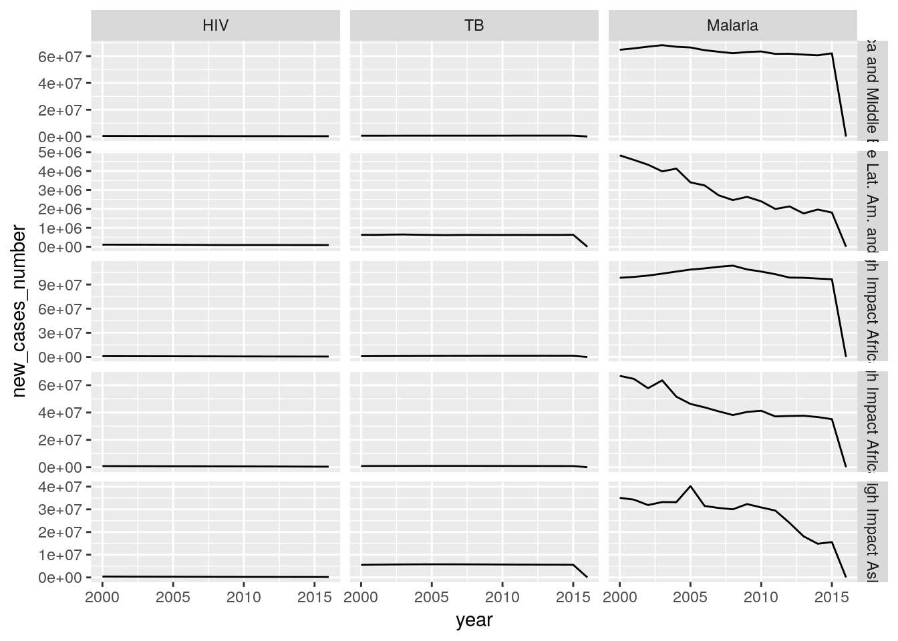
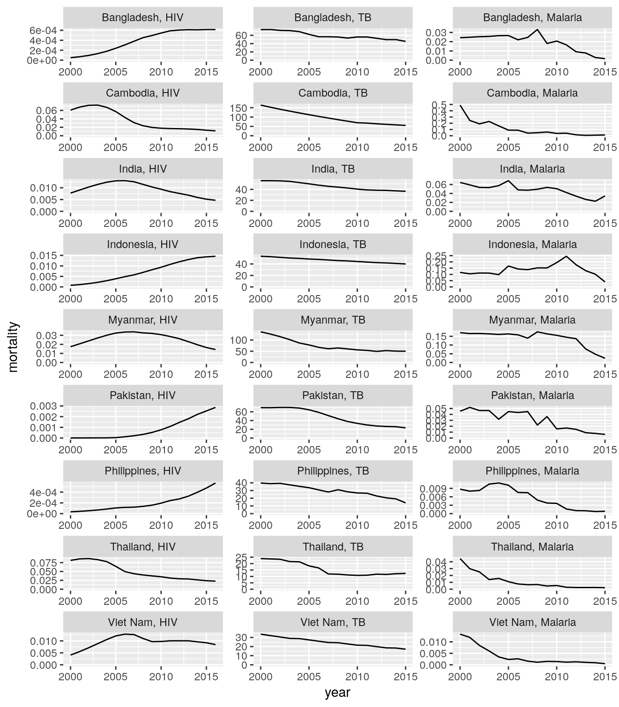
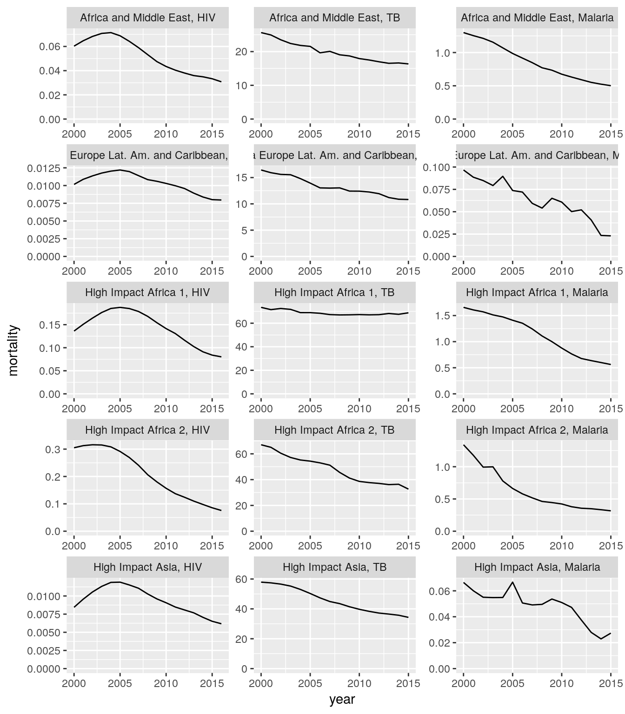
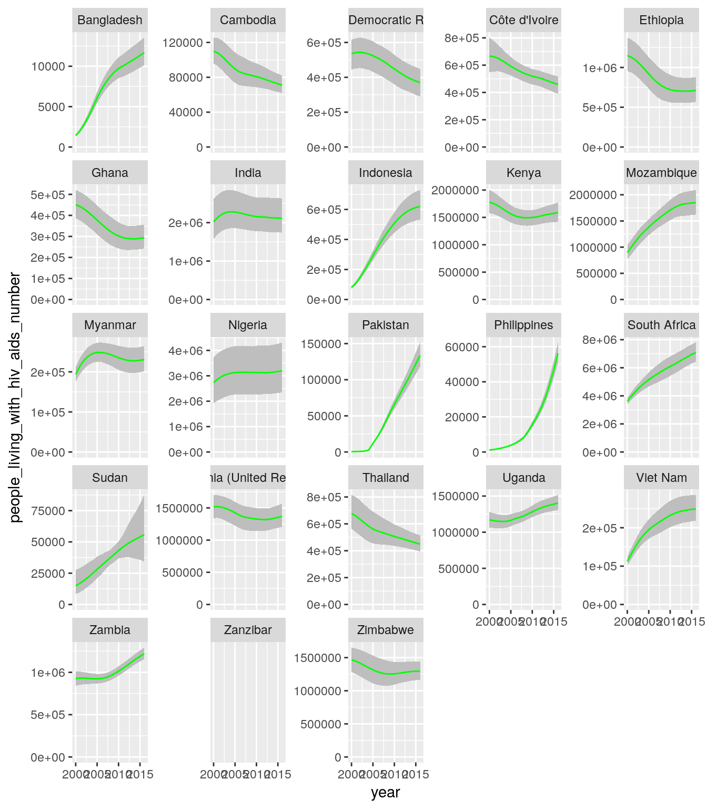
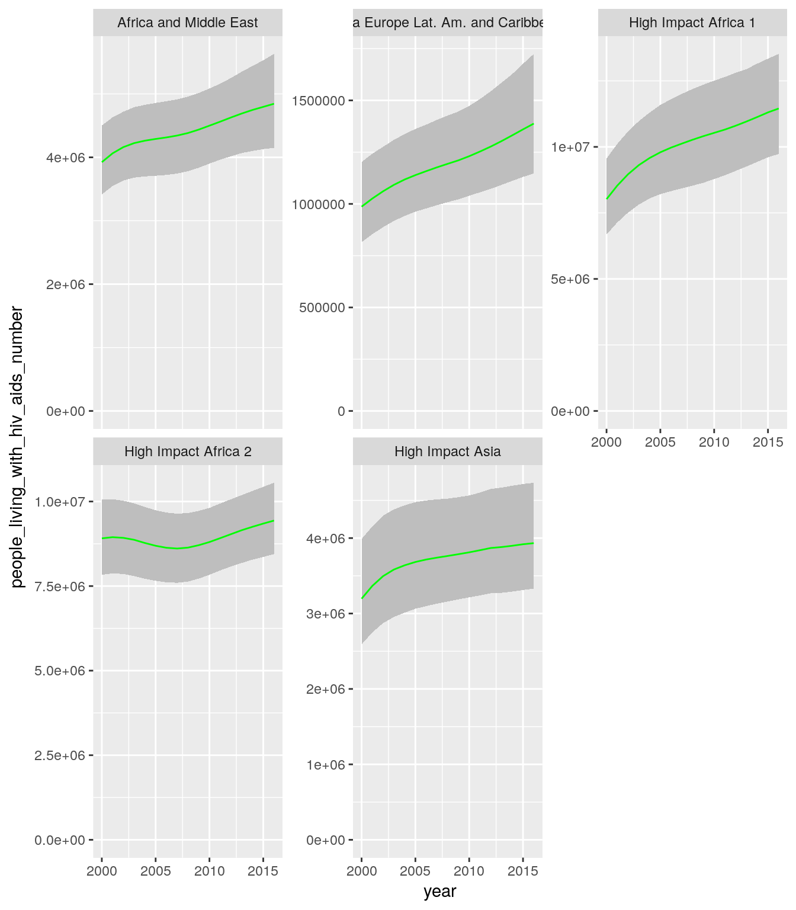
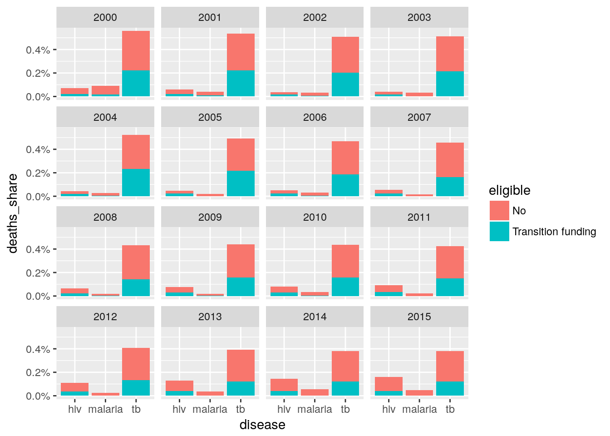

Trend data
Kirill Müller
October 20, 2017
Assignment 1
library(gfdata)
all_stats %>%
filter(five_regions == "High Impact Asia") %>%
ggplot(aes(x = year, y = hiv_new_infections_number)) +
geom_line() +
facet_wrap(~country, scales = "free_y")
all_stats %>%
filter(five_regions == "High Impact Asia") %>%
ggplot(aes(x = year, y = tb_new_cases_number)) +
geom_line() +
facet_wrap(~country, scales = "free_y")## Warning: Removed 1 rows containing missing values (geom_path).
all_stats %>%
filter(five_regions == "High Impact Asia") %>%
ggplot(aes(x = year, y = malaria_new_cases_number)) +
geom_line() +
facet_wrap(~country, scales = "free_y")## Warning: Removed 1 rows containing missing values (geom_path).Assignment 2
library(gfdata)
all_stats_new_cases_long <-
all_stats %>%
rename(hiv_new_cases_number = hiv_new_infections_number) %>%
select(
five_regions, country, year,
ends_with("_new_cases_number")
) %>%
gather(indicator, count, -five_regions, -country, -year) %>%
separate(
indicator,
into = c("disease", "indicator"),
extra = "merge"
) %>%
mutate(disease = recode(
disease,
"tb" = "TB", "malaria" = "Malaria", "hiv" = "HIV"
)) %>%
mutate(disease = forcats::fct_inorder(disease)) %>%
spread(indicator, count)
all_stats_new_cases_long## # A tibble: 6,477 x 5
## five_regions country year disease new_cases_number
## * <chr> <chr> <dbl> <fctr> <dbl>
## 1 Africa and Middle East Algeria 2000 HIV 595
## 2 Africa and Middle East Algeria 2000 TB 23000
## 3 Africa and Middle East Algeria 2000 Malaria 41.2
## 4 Africa and Middle East Algeria 2001 HIV 650
## 5 Africa and Middle East Algeria 2001 TB 23000
## 6 Africa and Middle East Algeria 2001 Malaria 9.41
## 7 Africa and Middle East Algeria 2002 HIV 705
## 8 Africa and Middle East Algeria 2002 TB 24000
## 9 Africa and Middle East Algeria 2002 Malaria 9.41
## 10 Africa and Middle East Algeria 2003 HIV 762
## # ... with 6,467 more rowsall_stats_new_cases_long %>%
filter(five_regions == "High Impact Asia") %>%
ggplot(aes(x = year, y = new_cases_number)) +
geom_line() +
facet_grid(country~disease, scales = "free")## Warning: Removed 1 rows containing missing values (geom_path).
Assignment 3
library(gfdata)
all_stats_new_cases_long %>%
group_by(five_regions, year, disease) %>%
summarize(new_cases_number = sum(new_cases_number, na.rm = TRUE)) %>%
ungroup() %>%
ggplot(aes(x = year, y = new_cases_number)) +
geom_line() +
facet_grid(five_regions~disease, scales = "free")
Assignment 4
library(gfdata)
all_stats_inc_mort_long <-
all_stats %>%
rename(hiv_new_cases_number = hiv_new_infections_number) %>%
rename(hiv_deaths_number = aids_deaths_number) %>%
group_by(five_regions, country) %>%
mutate(lag_population_excluding_plwha = lag(population_excluding_plwha) * 100) %>%
ungroup() %>%
transmute(
five_regions, country, year,
nominator_hiv_incidence = hiv_new_cases_number * 100,
denominator_hiv_incidence = lag_population_excluding_plwha,
nominator_hiv_mortality = hiv_deaths_number * 100,
denominator_hiv_mortality = population_all_ages,
nominator_tb_incidence = tb_new_cases_number * 100000,
denominator_tb_incidence = population_all_ages,
nominator_tb_mortality = tb_deaths_number * 100000,
denominator_tb_mortality = population_all_ages,
nominator_malaria_incidence = malaria_new_cases_number * 1000,
denominator_malaria_incidence = population_at_malaria_risk,
nominator_malaria_mortality = malaria_deaths_number * 1000,
denominator_malaria_mortality = population_at_malaria_risk
) %>%
gather(indicator, value, -five_regions, -country, -year) %>%
separate(
indicator,
into = c("nom_denom", "indicator"),
extra = "merge"
) %>%
mutate(nom_denom = forcats::fct_inorder(nom_denom)) %>%
separate(
indicator,
into = c("disease", "indicator"),
extra = "merge"
) %>%
mutate(disease = recode(
disease,
"tb" = "TB", "malaria" = "Malaria", "hiv" = "HIV"
)) %>%
mutate(disease = forcats::fct_inorder(disease)) %>%
spread(nom_denom, value) %>%
filter(nominator > 0 & denominator > 0)
all_stats_inc_mort_long## # A tibble: 10,162 x 7
## five_regions country year disease indicator nominat… denomi…
## <chr> <chr> <dbl> <fctr> <chr> <dbl> <dbl>
## 1 Africa and Middle East Algeria 2000 HIV mortality 1.85e⁴ 3.12e⁷
## 2 Africa and Middle East Algeria 2000 TB incidence 2.30e⁹ 3.12e⁷
## 3 Africa and Middle East Algeria 2000 TB mortality 2.50e⁸ 3.12e⁷
## 4 Africa and Middle East Algeria 2000 Malaria incidence 4.12e⁴ 1.09e⁶
## 5 Africa and Middle East Algeria 2000 Malaria mortality 2.07e³ 1.09e⁶
## 6 Africa and Middle East Algeria 2001 HIV incidence 6.50e⁴ 3.12e⁹
## 7 Africa and Middle East Algeria 2001 HIV mortality 2.06e⁴ 3.16e⁷
## 8 Africa and Middle East Algeria 2001 TB incidence 2.30e⁹ 3.16e⁷
## 9 Africa and Middle East Algeria 2001 TB mortality 2.50e⁸ 3.16e⁷
## 10 Africa and Middle East Algeria 2001 Malaria incidence 9.41e³ 1.11e⁶
## # ... with 10,152 more rowsall_stats_inc_mort_long %>%
filter(five_regions == "High Impact Asia") %>%
filter(indicator == "mortality") %>%
transmute(
country, year, disease, indicator,
rate = nominator / denominator
) %>%
spread(indicator, rate) %>%
ggplot(aes(x = year, y = mortality)) +
geom_line() +
scale_y_continuous(limits = c(0, NA)) +
facet_wrap(
~country + disease,
scales = "free",
ncol = 3,
labeller = labeller(.multi_line = FALSE)
)
Assignment 5
all_stats_inc_mort_long %>%
group_by(five_regions, disease, indicator, year) %>%
summarise(
rate = sum(nominator) / sum(denominator)
) %>%
spread(indicator, rate) %>%
ggplot(aes(x = year, y = mortality)) +
geom_line() +
scale_y_continuous(limits = c(0, NA)) +
facet_wrap(
~five_regions + disease,
scales = "free",
ncol = 3,
labeller = labeller(.multi_line = FALSE)
)
Assignment 6
all_stats_inc_mort_long %>%
group_by(five_regions, disease, indicator, year) %>%
summarise(
rate = sum(nominator) / sum(denominator)
) %>%
mutate(rate_change = rate / first(rate)) %>%
select(-rate) %>%
ungroup() %>%
spread(indicator, rate_change) %>%
ggplot(aes(x = year, y = mortality)) +
geom_line() +
facet_grid(five_regions ~ disease)
Assignment 7
all_stats %>%
select(
five_regions, country, year,
people_living_with_hiv_aids_number,
people_living_with_hiv_aids_lower_number,
people_living_with_hiv_aids_higher_number
) %>%
filter(grepl("^High Impact ", five_regions)) %>%
ggplot(aes(x = year)) +
geom_ribbon(
aes(
ymin = people_living_with_hiv_aids_lower_number,
ymax = people_living_with_hiv_aids_higher_number
),
fill = "grey"
) +
geom_line(
aes(
y = people_living_with_hiv_aids_number
),
color = "green"
) +
scale_y_continuous(limits = c(0, NA)) +
facet_wrap(~country, scales = "free_y")
Assignment 8
all_stats %>%
select(
five_regions, country, year,
people_living_with_hiv_aids_number,
people_living_with_hiv_aids_lower_number,
people_living_with_hiv_aids_higher_number
) %>%
group_by(five_regions, year) %>%
summarize_at(
vars(starts_with("people_living_with_hiv_aids_")),
funs(sum(., na.rm = TRUE))
) %>%
ungroup() %>%
ggplot(aes(x = year)) +
geom_ribbon(
aes(
ymin = people_living_with_hiv_aids_lower_number,
ymax = people_living_with_hiv_aids_higher_number
),
fill = "grey"
) +
geom_line(
aes(
y = people_living_with_hiv_aids_number
),
color = "green"
) +
scale_y_continuous(limits = c(0, NA)) +
facet_wrap(~five_regions, scales = "free_y")
Assignment 9
library(gfdata)
eligibility <-
all_stats %>%
select(
five_regions, country, year,
ends_with("_eligible")
) %>%
gather(disease, eligible, -five_regions, -country, -year) %>%
separate(disease, into = c("disease"), extra = "drop")
deaths <-
all_stats %>%
select(
five_regions, country, year,
hiv_deaths_number = aids_deaths_number,
ends_with("_deaths_number")
) %>%
gather(disease, deaths_number, -five_regions, -country, -year) %>%
separate(disease, into = c("disease"), extra = "drop")
eligibility %>%
left_join(deaths, by = c("five_regions", "country", "year", "disease")) %>%
group_by(year, disease, eligible) %>%
summarize(deaths_number = sum(deaths_number, na.rm = TRUE)) %>%
mutate(deaths_share = deaths_number / sum(deaths_number, na.rm = TRUE)) %>%
select(-deaths_number) %>%
ungroup() %>%
filter(eligible != "Yes") %>%
filter(year <= 2015) %>%
ggplot(aes(disease, deaths_share, fill = eligible)) +
geom_col() +
scale_y_continuous(labels = scales::percent) +
facet_wrap(~year)
Copyright © 2017 Kirill Müller. Licensed under CC BY-NC 4.0.